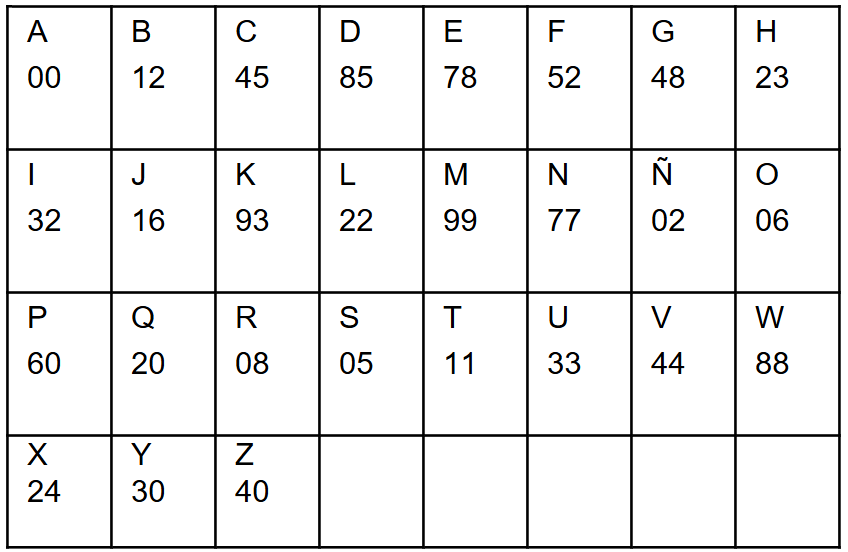

Tiempo restante: 60:00
Pregunta 1 de 80
En la siguiente analogía identifique la opción que corresponda:
De las siguientes palabras identifique cuál no pertenece a su categoría según el número de sílabas
tiburónLea el siguiente texto e identifiqué la idea central
PRODUCCIÓN PESQUERA EN EL ECUADORSegún organismos internacionales, la acuicultura en el Ecuador se basa principalmente en la producción de camarón, siendo 95 % de la producción acuícola; en segundo lugar, está la tilapia, que ha crecido notablemente en la última década, y en menor porcentaje, la explotación de crustáceos y otros peces de mar. Esta riqueza se da gracias a las corrientes oceánicas muy distintas, la corriente de agua cálida (El Niño) y la corriente de agua fría (Humboldt) su combinación crea un ecosistema rico en nutrientes. (Fragmento).
La apicultura en el Ecuador se basa principalmente en la producción de camarón, siendo 95 % de la producción.Interprete el significado que mejor se ajuste al siguiente refrán: "Cuando el río suena, piedras trae"
El agua al seguir su trayectoria mueve las piedrasIdentifique la palabra que No tiene relación con las otras
serpienteLea el siguiente texto
La diferencia esencial entre la Obra literaria y la Obra informativa reside, no en su belleza
formal, sino en su finalidad. La primera tiene un valor por sí misma; la segunda vale por su mayor o
menor aproximación a la verdad objetiva. Leemos la obra literaria sabiendo que es un ente de
fantasía, aunque su tema sea rigurosamente histórico, o corresponda a cosas de la realidad. Una
novela como "Átomo" es especialmente novela y no un tratado de física. (Fragmento).
- Infiera
cuál es el propósito comunicativo.
En el siguiente enunciado identifique el sinónimo de la palabra Actual
VigenteInterprete el significado que mejor se ajuste al siguiente refrán: "El que tiene boca, se equivoca"
Todos podemos cometer errores y lastimar por medio de nuestras palabrasLos siguientes términos indican una relación de conceptos. Identifique la opción que corresponda según sea su relación: AUTO - GARAJE
Comedor – HambreIdentifique la palabra que No tiene relación con las otras:
caballoInterprete el significado que mejor se ajuste al siguiente refrán. "Lo barato sale caro"
Se debe aprovechar las ofertas y descuentos en los supermercadosLea el siguiente texto periodístico
En 1912, el investigador británico Almroth Wright
escribió una carta que sostenía que las mujeres no debían votar y de hecho deberían mantenerse
alejadas de la política, debido a supuestas de ciencias psicológicas y fisiológicas. Lógicamente,
aquella carta provocó indignación y un aluvión de cartas dirigidas al periódico. (Fragmento).
Inferir lo que provoco el investigador británico Almroth Wright al enviar su carta al
periódico:
Lea el siguiente texto e infiera la idea central.
SIN PLÁSTICOS
El problema ambiental que generan las bolsas de plásticos es una lucha muy significativa que se
lleva a cabo en contra de las empresas que fabrican este producto por la contaminación que provocan,
ya que cada año se consumen a nivel mundial 500.000 millones de bolsas de plástico las mismas que
después de su uso terminan en ríos, mares y océanos de nuestro planeta, provocando la muerte por
asfixia de especies marinas.
Los siguientes términos indican una relación de conceptos. Identifique la opción que corresponda según sea su relación: FÉRTIL - ESTÉRIL
Conocimiento – IgnoranciaEn las siguientes oraciones identifique la que no pertenece a su categoría
El perro juega con su pelotaLos siguientes términos indican una relación de conceptos. Identifique la opción que corresponda: ENFERMO - VIRUS
Violento – PacienteInterprete el significado que mejor se ajuste al siguiente refrán: "El hábito no hace al monje"
Debemos vestirnos moderadamente para no llamar la atenciónDe las siguientes opciones elija aquella palabra que tiene un significado diferente al grupo que se presenta
DeterioroInterprete el siguiente refrán: "Ruin es quien por ruin se tiene."
La autoestima es importante para perder la personalidadDe las siguientes opciones elija aquella palabra que tiene un significado diferente al grupo que se presenta
reconocimientoPetro y Pedro son hermanos. Al sumar sus edades se obtiene un total de 35 años. Además, Petro es 5 años menor que su hermano Pedro. Calcular la edad de Pedro y de Petro.
Pedro: 20 años; Petro: 15 añosEn la bandera del instituto Keller de forma triangular se determina que, al medir sus ángulos internos, estos cumplen con una progresión aritmética en donde el menor de ellos tiene un valor de 33,16°. Determinar el valor del ángulo interno de mayor valor.
El ángulo interno mayor mide 86,88°La empresa de transporte Lync ofrece dos tarifas para un servicio de entrega. La tarifa A es de $10,00 más $2,00 por cada kilogramo de peso del paquete. La tarifa B es de $5,00 más $4,00 por cada kilogramo de peso del paquete. Francis necesita enviar un paquete que pesa 8 kilogramos. Determinar la tarifa que a Francis le conviene más económicamente, seleccionando los signos correctos en la siguiente operación para comparar las tarifas:
Sandra es una estudiante que realiza sus estudios universitarios en Estados Unidos. Sus padres le envían cierta cantidad de dinero para cubrir sus gastos. Sandra destina:
1/2 para el pago del alquiler del departamento donde habita, 1/4 para pagar los servicios básicos, 1/16 para pagar su tarjeta de transporte público, 1/8 para su alimentación.
Al final del mes le sobran $133,33 para otros gastos. Calcular el total de dinero que sus padres le envían a Sandra para su manutención.
$ 2 133,82El triatleta Swing está entrenando para una competencia que consta de natación, ciclismo y carrera. Durante su entrenamiento, ha estado siguiendo un plan en el que nada durante 30 minutos a una velocidad constante de 2 km/h, luego pasa a ciclismo durante 1 hora a una velocidad de 20 km/h y finalmente corre durante 30 minutos a una velocidad de 20 km/h. Calcular la distancia total recorrida por el atleta en su entrenamiento de triatlón.
33 kmEl ingeniero Alex se encuentra diseñando la cubierta de un galpón industrial. Para este tipo de construcciones se establece que el ángulo de inclinación entre el techo y la columna deberá ser de 40 grados menos que el doble de la medida de su ángulo suplementario. Diseña el ángulo que deberá tener la cubierta respecto a su columna del galpón.
160,76 gradosEl concesionario de automóviles ASAC ofrece dos modelos de vehículos: sedán y SUV. El precio base de un sedán es $20 000,00 y el precio base de un SUV es $30 000,00. Además, el concesionario ofrece descuentos de 10% en los sedanes y recargos del 5% en los SUV. Si un cliente decide comprar un sedán y un SUV, Calcular el costo total de la compra seleccionando los signos correctos en la operación:
El instituto Iñaquito cada verano realiza una competencia interna de matemáticas que consta de 3 rondas, en la primera ronda compitieron 60 estudiantes, en la segunda ronda compitieron 20 estudiantes menos que en la primera ronda, y en la última ronda quedaron solo 10 estudiantes. Determinar el total de estudiantes que participaron en la competencia.
130 estudiantesA Silvia le descuentan un 6,28% de su salario debido a una falta disciplinaria y recibe la cantidad de $2 437,89. Determinar el valor del salario del mes de anterior previo a aplicarse su sanción disciplinaria.
$ 2 601,52Patricio está preocupado sobre su aprobación en la asignatura de Investigación Científica. Las calificaciones de sus evaluaciones pasadas son:
Evaluación 1: 9,54 puntos.
Evaluación 2: 7,35
puntos.
Evaluación 3: 5,25 puntos.
Evaluación 4: 5,69 puntos.
Para aprobar su curso requiere una
nota mínima de 7 puntos como promedio final. Determinar la nota que el estudiante debe obtener en su
examen final con el fin de aprobar la materia.
En la planta de elaboración de cosméticos Belle, se detecta que en el primer turno de operación, 13 trabajadores y 18 auxiliares de producción no han asistido. Si el total de trabajadores de la planta es de 767 trabajadores, determinar el porcentaje de trabajadores que efectivamente vinieron a trabajar en el primer turno.
95,69%El estudiante Robert Klein no logró alcanzar el puntaje necesario para aprobar en tres asignaturas: matemáticas, literatura e idiomas. El estudiante Klein diseña un plan de estudio que incluye dedicar el 35% de su tiempo al estudio de matemáticas, el 25% al estudio de literatura y el resto a idiomas. Si el estudiante tiene un total de 30 horas para estudiar esta semana, calcular el número de horas que debería dedicar al estudio de idiomas
12 horasEn una competencia de atletismo, Gina entrena tres tipos de ejercicios: carrera, saltos y lanzamiento. Sus puntuaciones son: 60, 40 y 25 respectivamente. Si el reglamento penaliza con 45 puntos menos al total por cada puntuación menor a 35 puntos. Determinar las operaciones adecuadas para encontrar el puntaje total.

Ramón revisa una promoción que anuncia un descuento del 17,5% en artículos seleccionados para niños. Una camisa marca un precio final de $39,79 al aplicarse el descuento. El cliente requiere determinar el precio original de la camisa para regalarla a su hijo.
$48,23En la pizzería KDELI se prepara una pizza para cinco personas, donde se utilizan 270 gramos de queso, 320 gramos de harina y 170 gramos de embutidos. Determinar las cantidades para la nueva receta si se requiere preparar una pizza para 17 personas.
Harina: 1 808 gramos, Embutidos: 587 gramos, Queso: 918 gramosEn un cultivo de bacterias hay tres tipos: tipo A, tipo B y tipo C, sus tasas de crecimiento son diferentes. El total de bacterias en el cultivo es de 9600. Si se sabe que el número de bacterias tipo B es tres veces el número de bacterias tipo C, y el número de bacterias tipo A es el doble del número de bacterias tipo B. Calcular el número total de bacterias de cada tipo en el cultivo.
Thomas está planificando su horario para el próximo semestre en la universidad. Tiene que tomar tres cursos: matemáticas, comunicación y ciencias. Los costos por crédito son $150 para matemáticas, $120 para comunicación y $140 para ciencias. Tienen 4 créditos, 3 créditos y 5 créditos respectivamente. Si el estudiante desea inscribirse en estos tres cursos, calcular el costo de la matrícula.
$1 666,0Mariana encuentra una oferta en una tienda donde aplican un 20% de descuento en mochilas escolares. Después de aplicar el descuento, el precio final de una mochila es de $36,00. Mariana quiere conocer el precio original de la mochila.
$45,00En el concurso de matemáticas "Números" participan Marta y Juan. El doble del número de puntos ganados por Marta es igual a los puntos ganados por Juan. Si Marta hubiera ganado 10 puntos más y Juan hubiera ganado el triple de sus puntos originales, Marta tendría el cuádruple de los puntos de Juan. Calcular el número de puntos que ganó cada uno.
Marta ganó 3 puntos y Juan ganó 0,75 puntosEl consumidor Kall de electricidad está revisando su factura mensual. La factura indica que ha consumido 450 kWh de electricidad durante el mes. El costo por cada kWh es de $0,12. Si hay un cargo adicional de $10 en cada factura, calcular el monto total de la factura eléctrica, identificando las operaciones correctas.
Carolina es analista en un centro comercial, ella se encuentra guardando información de los productos para lo cual debe digitar en una tabla Excel una lista de códigos para poder obtener el nombre de los productos, los cuales están formados por números y signos, pero al momento de obtener los nombres de los productos aparece un error de código. Identifique en qué grupo se encuentra el error.
1. (1%58001$765&85511)
2. (1%58001$765&85511)
3. (1%58001$765&85511)
4. (1%58001$795&85511)
Geovany y Samuel están llenando un álbum de cromos, cada cromo tiene una letra; Samuel quiere identificar, cuál es la letra de los cromos que NO se repite.

José, docente en una unidad educativa, asigna una tarea a sus estudiantes; para esto entrega una cuadricula con el abecedario, cada letra representada por dos dígitos; pidiéndoles identificar a qué serie representa a la siguiente palabra: GLICERINA
Pilar quiere descifrar la clave de la cerradura de su oficina. Para abrir la cerradura debe utilizar la clave que es PILAR. Cada letra de la clave está representada por dos números. Se proporciona una tabla con las letras y los números para descifrar la clave. ¿Cuál es la combinación de números?
Marco se encuentra en una clase de lengua y literatura, en esta la docente le asigna una tarea brindándole como recursos dos cuadriculas, indicando que deben identificar la oración que se forma en la cuadricula número dos al elegir cada uno de los cuadros que contiene un patrón en la primera cuadricula. Identifique la oración que corresponde.
| CUADRICULA 1 | CUADRICULA 2 |
|---|---|
Danna se encuentra en su unidad educativa, su maestra le asigna una tarea; para esto entrega una cuadricula con el abecedario, cada letra representada por dos dígitos; pidiéndole identicar a qué serie representa a la siguiente palabra:
COLORESEdison es docente en una unidad educativa y asigna una tarea a sus estudiantes. Les entrega una plantilla con dos cuadriculas, en las cuales deben identificar la palabra que se forma con las letras que se obtienen de la cuadricula 2. Se debe elegir el cuadro que contiene un patrón en la cuadricula 1. Identifique la palabra correcta.
| CUADRICULA 1 | CUADRICULA 2 |
|---|---|
Alejandro está en clases de ortografía y la docente le pide identificar cuántas parejas del grupo de letras (mn) hay en el siguiente grupo de letras. Seleccione la respuesta que corresponda.

Arturo se encuentra en clase de lengua y literatura, la docente ha notado en el estudiante ciertos problemas de disgrafia, para ayudar a mejorar su condición le entrega una plantilla donde deberá identificar cuántas letras d y b hay en dicha plantilla.
Jesica está realizando una tarea en clase, la docente Doménica pide identificar cuántas palabras infiltradas hay en la cuadrícula que les presenta. Selecciona la respuesta que corresponda.

Adolfo está clasificando por números y letras los productos de aseo personal y quiere identificar en la cuadrícula, cuántas parejas de productos de aseo hay en bodega.
Jorge se encuentra rindiendo una evaluación de atención y concentración para renovar su licencia de conducir, en esta evaluación se encuentra con dos nombres y dos direcciones que deberá identificar si son iguales o diferentes, debiendo ser muy detallista en cuanto a los signos: comas, tildes, puntos, etc. Identifique cuál es la respuesta correcta.
Identifique la palabra que No tiene relación con las otras.
automóvilEnrique quiere descubrir cuál es el código numérico para ingresar al aula virtual. La clave para descifrar el código es el nombre de una persona, para lo cual debe guiarse considerando que a cada letra le corresponde dos números. El nombre es JULIO. A continuación, se expone la tabla para descifrar el código del aula virtual.
Raúl un adolescente diagnosticado con dislexia se encuentra en su terapia, en esta le entregan una plantilla en la cual deberá identificar cuántas letras p, b y d hay en la misma. Identificar cuántas letras (p) y (b) hay en la plantilla.
Juan y Gerardo están armando un rompecabezas, cada una de estas piezas se encuentran marcadas por una letra del abecedario, las piezas están desordenadas alfabéticamente. Gerardo desea identificar cuántas letras (q) hay en el rompecabezas para poder armarlo de la mejor manera.
Samanta quiere identificar el código del celular de David, dicho código está cifrado en números y letras. De acuerdo a la letra va el número. A continuación, se proporciona las letras para descifrar el código numérico del celular de David.
Código: 0 1 2 3 4 5 6 7 8 9 E M D A O C L I G N
Palabra: D O M E N I C A
Seleccione una:Jorge se enlistó al servicio militar, él pertenece al primer pelotón que está compuesto por 20 conscriptos formados en 4 filas de 5, ellos deben formarse en orden de estatura de menor a mayor por lo que requieren identificar en qué orden deben formarse. Pedro mide 1.75, Jorge mide 6cm más que Pedro, Esteban mide 1cm más que Pedro, Carlos mide 3cm más que Esteban, Orlando mide 4cm menos que Jorge. Identifique el orden en el cual deben formarse de menor a mayor.
Seleccione una:Kevin se encuentra en una evaluación psicológica para conocer su nivel de atención y concentración, para esto le presentan una plantilla con dos cuadrículas, en las cuales deberá identificar la palabra que se forma en la cuadrícula 2 al elegir el cuadro que contiene un patrón en la cuadrícula 1 ordenadamente. Identifique la palabra correcta.
| CUADRICULA 1 | CUADRICULA 2 |
|---|---|
Soledad es docente en una unidad educativa, para mejorar el nivel de concentración de sus estudiantes ella les dicta una palabra y les indica que encuentren el inverso de la misma. Identifica el inverso de la siguiente palabra: administrativamente
etnemvaitartsinimdaUn investigador necesita acceder a información encriptada. Para ello, se requiere completar una contraseña dada a través de 5 elementos que obedecen a la siguiente sucesión alfabética:
AZ, BY, CX, DW,Seleccionar el quinto elemento que completará la sucesión, para desbloquear el acceso a la información.
EZLa tribu mística Albares conocida por su profundo conocimiento matemático, ha guardado una secuencia numérica ancestral. Esta secuencia contiene mensajes codificados que sólo pueden ser desentrañados a través de un patrón matemático.
Los términos son: 5, 12, 22, 35,Calcular el próximo número en la secuencia para revelar el oculto misterio detrás de ella.
52Un investigador necesita acceder a información encriptada, para ello, se requiere completar una contraseña dada a través de 5 elementos que obedecen a la siguiente sucesión alfabética:
oso, oto, ouo, ovo,Seleccionar el quinto elemento que completará la sucesión, para acceder a la información.
owoUn técnico busca activar una máquina de control numérico computarizado, para lo cual es necesario completar una contraseña compuesta por una secuencia de cinco palabras. El monitor muestra en pantalla solo cuatro elementos de la secuencia:
imprimir, sentir, escribir, esculpir,Seleccionar la quinta palabra que completará la contraseña.
bailarEn una discoteca de la ciudad de Riobamba la consola de un DJ sufre una avería. Para reiniciarla, el usuario debe completar una contraseña compuesta por una serie numérica de 5 elementos. En la pantalla se muestran solamente los 4 primeros elementos:
16, 32, 96, 384,Seleccionar el quinto elemento correspondiente a la serie, para reiniciar la consola.
1 920Un casino ofrece varios premios económicos para quienes ganen una o varias partidas de naipes. Los premios en dólares se incrementan según el número de partidas ganadas como se muestra en la serie:
10, 15, 25, 45, 85,Seleccione el premio económico que otorgará el casino luego de ganar la sexta partida de naipes.
160Un profesor olvida el código de activación de su software de cálculo estructural. La plataforma de asistencia al usuario muestra un código de activación, el cual, está compuesto por una secuencia de cinco palabras; y, se muestran solamente cuatro de ellas:
candidato, cebolla, circunferencia, cobalto,Seleccionar la quinta palabra que completará la secuencia.
compadreLorena está rindiendo su evaluación de ingreso a la Universidad, en esta le presentan cuatro grupos de letras y le indican que debe identificar el número de grupo que contiene las letras que no pertenecen al resto de grupos.
1. (m,l,f,a,p,r,d,n,h,k,t,u,e,c,o,u)
2. (l,p,t,r,u,f,e,c,u,k,o.n,h,d,m,a)
3.
(f,e,l,b,t,h,u,p,o,k.r,a,d,w,u,m)
4. (r,o,k.c,u,n,l,m,a,t,h,p,f,u,d,e)
Un investigador debe activar una máquina de ensayos. Para lo cual es necesario que se complete una contraseña compuesta por una secuencia de cinco palabras. El monitor de la máquina muestra en pantalla solo cuatro elementos de la secuencia:
agotar, enojar, innovar, obviar,Seleccionar la quinta palabra que completará la secuencia
empujarPara poder acceder a una base de datos de una empresa de tecnología, un ingeniero debe completar una clave compuesta por una secuencia de cinco palabras. Como medida de seguridad el ordenador solo muestra cuatro de sus elementos:
talento, tapete, termo, test,Seleccionar la quinta palabra que completará la clave de acceso a la base de datos
tezUna investigadora de astronomía busca tener acceso a una base de datos nacional. La plataforma busca comprobar que el usuario no es un robot, para lo cual solicita completar una secuencia de palabras que se muestra a continuación:
carta, cerco, circo, costa,Seleccionar la quinta palabra que completará la secuencia y brindará acceso a la base de datos
curvaEl docente Jacinto envía de tarea a casa lo siguiente: ordenar cada grupo de letras para formar un nombre de persona. Identificar cuál de estos nombres NO es el de un hombre
1.- TEBORRO
2.- NIBETO
3.- LLERGUIMO
4.- SUNVE
A Sofía le presentan grupos de números en el cual deberá identificar el grupo de números que no pertenezca al resto de grupos. Identifique la respuesta correcta.
01625175985; 01517652985; 01517579825; 01561725985Identifique la palabra que No tiene relación con las otras:
ébanoPara acceder a los archivos de una carpeta encriptada es necesario completar una contraseña compuesta por seis elementos. Se conoce los primeros cinco elementos de la contraseña como se muestra a continuación:
1, 9, 25, 49, 81,Seleccionar el sexto elemento que permitirá completar la contraseña
125Un investigador nota que el crecimiento poblacional de conejos obedece a la siguiente sucesión:
1, 1, 2, 3, 5, 8Seleccionar la cantidad de conejos que tendrá el laboratorio en el futuro más cercano
13Javier quiere identificar en qué grupo de números hay un número que NO está en los otros grupos. Seleccione la respuesta que corresponda.
184590, 458912, 983540, 841259Identifique la palabra que No tiene relación con las otras.
sapoEn una ensambladora de motocicletas un robot sufre una avería. Para reiniciarlo el analista de sistemas debe acceder a su programación y para ello, es necesario colocar una contraseña de 5 elementos. Se muestran sus 4 primeros elementos:
pan, pcn, pen, pgnPara ingresar a una plataforma virtual un software de seguridad muestra en pantalla los cuatro primeros números de un código de seguridad.
13, 25, 49, 97,